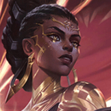

核心裝備
 黑焰火炬
黑焰火炬多段一技與三技能頻繁維持灼燒，並配合奪目持續壓血。
 黎安卓的折磨
黎安卓的折磨敵人越坦、團戰越久收益越高，能補足梅爾對前排的處理能力。
 死亡之帽
死亡之帽大幅提高奪目累積與大絕引爆的中後期上限。
 虛空之杖
虛空之杖敵方堆魔抗後補穿透，避免範圍技能只是在刮前排。
 無限寶珠
無限寶珠多人被磨到低血線後，無限寶珠能提高大絕與技能的收尾效率。

Mel · 遠距消耗／投射反制型法師
梅爾的 ARAM 強度不只來自傷害，而是二技能把正面投射技能直接變成心理壓力。站在後排用一技、三技把奪目掛到多人，等層數與血線成熟後再大絕一次收尾。
本站評級理由：單線站位讓一技與三技很容易同時碰到多人並持續疊奪目，大絕又能一次引爆所有被標記目標；二技在 ARAM 更能反制大量正面飛行技能。7.2a 已把一般 ARAM 的傷害與承傷都調回 100%。
7.2a 官方將梅爾一般 ARAM 傷害 90%→100%、承受傷害 105%→100%；7.2b 未再追加梅爾 ARAM 百分比修正。
多段一技與三技能頻繁維持灼燒，並配合奪目持續壓血。
敵人越坦、團戰越久收益越高，能補足梅爾對前排的處理能力。
大幅提高奪目累積與大絕引爆的中後期上限。
敵方堆魔抗後補穿透，避免範圍技能只是在刮前排。
多人被磨到低血線後，無限寶珠能提高大絕與技能的收尾效率。

前期補魔力、魔攻與法術穿透，方便維持一技／三技消耗。

升級三級鞋後提高魔攻、法術穿透與魔力回復，適合高頻遠距消耗與爆發。

三技緩速與一技範圍命中都很容易讓彗星打中，整場消耗收益高。

ARAM 長時間不回城，額外魔力比 7.2b 已削弱金幣收益的植物學家更穩定。
技能加速特別能降低二技長冷卻的空窗，也提高消耗頻率。

前中期每輪技能額外補傷害，幫助更快累積處決壓力。

面對 ARAM 常見高血量前排時提高傷害，補足單點打坦效率。

沒有位移時最重要的保命工具，二技冷卻時尤其不能亂交。

被貼臉時補一層容錯，讓梅爾有時間等二技或三技再次轉好。
1 技 > 3 技 > 2 技
ARAM 開局三個基礎技能各點 1 級，之後主升 1 技、次升 3 技；大絕能點就點。
用 1 技持續消耗，3 技留來限制敵人走位或保護自己。2 技不要拿來擋小技能，看到高傷害投射、控制或大絕時再開，反射成功常能直接扭轉第一波團戰。
黑焰與黎安卓成形後，只要技能碰到前排也有價值。優先活著持續疊奪目，等多個目標都帶標記再決定大絕，不必只盯一個殘血。
站位永遠比多補一次普攻重要。2 技冷卻時往後退，等前排重新建立距離；當敵方多人奪目層數高、血線同步下降時，再開大通常能一次逼出多個保命甚至直接收掉。
 水仙三叉戟
水仙三叉戟敵方護盾很多
 女妖面紗
女妖面紗敵方遠控非常多
 黑魔禁書
黑魔禁書敵方治療很多
看遊戲卡片下方分類 → 點相同分類 → 看左側 S+／S／A。
主要傷害來自技能命中與連續施法，技能增幅能最直接提高輸出與循環。
投射物、技能暴擊、投射技能冷卻與大絕強化都與梅爾非常契合。
連續技能命中與大絕收尾能利用多張雷霆系列增幅。
控制技能能提供穩定留人，強化控制可提高遠距輸出的安全性。
沒有可靠長距位移時，跑速有助於維持技能施放距離與撤退。
7.2b ARAM 梅爾攻略：官方 7.2a 已把一般 ARAM 傷害與承傷調回 100%／100%；核心灼燒法師配置參考 WildRiftFire 7.2b，並因 7.2b 植物學家金幣下修，ARAM 符文改採更穩定的魔力與消耗組合。
ARAM 使用獨立於召喚峽谷的資料集；本站會把官方模式平衡、單線 5v5 特性與出裝／符文適配分開判斷，而不是直接複製峽谷配置。